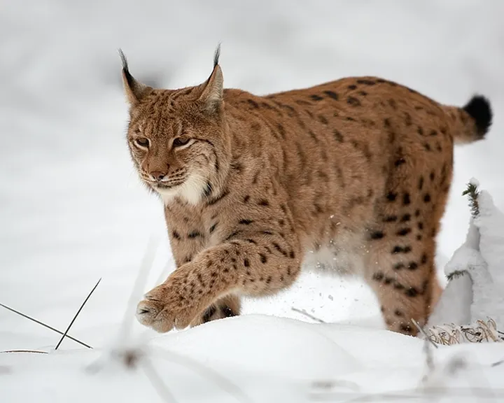

Luchs oder Wildkatze?
Der Luchs ist fast doppelt so groß, hat Pinselohren und einen kurzen Stummelschwanz.


Die Unterschiede
| Luchs | Wildkatze | |
|---|---|---|
| Größe | Schulterhöhe 50–70 cm | etwa so groß wie eine kräftige Hauskatze |
| Ohren | schwarze Haarpinsel | ohne Pinsel |
| Schwanz | kurz, mit schwarzer Spitze | lang und buschig, mit Ringen |
| Trittsiegel | 7–9 cm | etwa 4 cm |
Merkhilfe: Pinselohren und ein Stummelschwanz: Luchs.
Größe und Gestalt
Der Luchs ist die größte Katze Europas: hochbeinig, mit einer Schulterhöhe von 50 bis 70 cm, etwa so hoch wie ein Schäferhund. Die Wildkatze ist kaum größer als eine Hauskatze, wirkt aber kräftiger. Weibchen wiegen um 4 kg, Kater etwa 5 kg.
Ohren, Schwanz und Fell
Den Luchs erkennst du an den schwarzen Haarpinseln auf den Ohren, am Backenbart und am kurzen Stummelschwanz mit schwarzer Spitze. Sein Fell ist meist gefleckt. Die Wildkatze hat einen langen, buschigen Schwanz mit dunklen Ringen und stumpfem, schwarzem Ende. Ihr Fell ist verwaschen grau-gelblich getigert.
Wo sie in Deutschland leben
Luchse gibt es bei uns nur in drei kleinen Vorkommen: im Harz, in Ostbayern rund um den Bayerischen Wald und im Pfälzerwald. Im Monitoringjahr 2022/2023 wurden bundesweit mindestens 189 Tiere nachgewiesen. Wildkatzen sind häufiger. Der BUND schätzt ihren Bestand auf 6.000 bis 8.000 Tiere, überwiegend in den Wäldern Mittel- und Süddeutschlands.
Häufige Fragen
Ist der Luchs eine Wildkatze?
Nein. Beide gehören zur Familie der Katzen, sind aber verschiedene Arten. Der Eurasische Luchs heißt wissenschaftlich Lynx lynx, die Europäische Wildkatze Felis silvestris. Die Wildkatze ist auch keine verwilderte Hauskatze, sondern eine eigene Wildart.
Wie viel größer ist ein Luchs als eine Wildkatze?
Deutlich. Ein Luchs reicht einem Erwachsenen bis ans Knie und bringt ein Mehrfaches an Gewicht auf die Waage. Die Wildkatze hat das Format einer kräftigen Hauskatze.
Wie unterscheiden sich die Spuren?
Beide ziehen beim Laufen die Krallen ein, die Abdrücke sind rund und zeigen keine Krallen. Das Trittsiegel des Luchses misst 7 bis 9 cm, das der Wildkatze nur etwa 4 cm und ist von dem einer Hauskatze nicht zu unterscheiden.
Wo kann ich in Deutschland einen Luchs sehen?
In freier Natur kaum. Luchse sind scheu, vor allem in der Dämmerung und nachts unterwegs und durchstreifen riesige Reviere. Die besten Chancen bieten Spuren im Schnee im Harz, im Bayerischen Wald und im Pfälzerwald.
Ich habe eine getigerte Katze im Wald gesehen. War das eine Wildkatze?
Möglich, aber nach dem Aussehen allein kaum sicher zu sagen. Für die Wildkatze sprechen der dicke Schwanz mit stumpfem, schwarzem Ende und die verwaschene Zeichnung. Sicher gelingt der Nachweis oft nur genetisch, zum Beispiel über Haare an Lockstöcken.
Was mache ich, wenn ich junge Katzen im Wald finde?
Nicht anfassen und nicht mitnehmen. Es können junge Wildkatzen sein, deren Mutter gerade jagt. Der BUND rät, die Tiere an Ort und Stelle zu lassen.
Sind Luchs und Wildkatze geschützt?
Ja, beide sind in Deutschland streng geschützt. Den Erhaltungszustand des Luchses stuft das Bundesamt für Naturschutz als kritisch ein, die Wildkatze gilt laut Roter Liste als gefährdet.
Quellen
- Bundesamt für Naturschutz: Luchsvorkommen in Deutschland (öffnet in neuem Fenster)
- Deutscher Bundestag: Der Luchs im Monitoringjahr 2022/2023 (öffnet in neuem Fenster)
- BUND Naturschutz: Steckbrief Europäische Wildkatze (öffnet in neuem Fenster)
- BUND: Wildkatzenwälder von morgen (öffnet in neuem Fenster)
Stand: